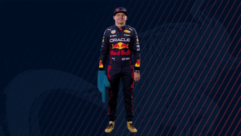

FORMULA 1
MENU


Max Emilian Verstappen es un piloto de automovilismo neerlandes nacido en Belgica.
Fue campeon del Campeonato Mundial de Karting en 2013. Es piloto de Formula 1 desde 2015,
debutando con la escuderia Toro Rosso. Ha sido bicampeon del Campeonato Mundial
de Formula 1 en 2021 y 2022, y tercero en 2019 y 2020 con Red Bull Racing, donde corre desde 2016.
Es el piloto mas joven en liderar una vuelta durante un Gran Premio de Formula 1,
el ganador mas joven de un Gran Premio (18 anios 7 meses y 15 dias en el Gran Premio de Espana de 2016),
el mas joven en lograr el record de vuelta Gran Premio de Brasil de 2016,
el piloto mas joven en lograr el record de vuelta en una sesion,
esta fue en la tercera practica libre en el Autodromo Hermanos Rodriguez (Mexico)
el 28 de octubre de 2017 y el piloto mas joven en competir en la historia de esta categoria,
ya que hizo su debut con 17 anios y 166 dias en el Gran Premio de Australia de 2015
para la Scuderia Toro Rosso,como asi tambien el primer piloto de nacionalidad
neerlandesa en subir al primer lugar del podio de F1.
